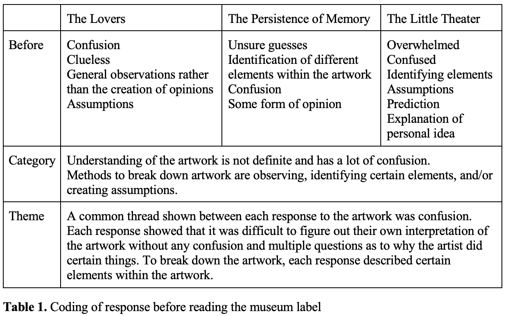

"How do museum labels affect the understanding of readers?"
Museum labels are a type of genre that aims to inform readers about a specific artwork. It works to give background information to help readers learn more about an artwork. Some common tools that museum labels use are a title, a description, and/or information about the artist (Lin & Yao, 2018). Since museum labels are writings that interact with a diverse audience, curators have to write labels that appeal to a general part of the population, which usually are adults. They write about the artwork such as how it was created, what influenced the artist, background information about the artist, or even information about the time period that the artwork was created in so that readers gain an understanding and form their own opinion or interpretation.
Museum labels have many different components that have been studied. There have been many studies where researchers looked at how museum labels affected appreciation or visual engagement of viewers in a quantitative method (Reitstätter, et al., 2022). Some studies have looked at one part of a museum label, such as the title. A study by Keith Millis saw how titles itself affect the aesthetic experience and overall interpretation of artwork and found that more elaborative titles increased the aesthetic experience and overall interpretation (Millis, Keith, 2001). Other studies looked at what length of description readers preferred and how it affected their satisfaction and appreciation (Temme, 1992). In addition, studies have used a control group to compare the effect they were looking at. One common effect that studies have looked at was visual engagement. To see how viewers engaged with the artwork, some studies tracked the eye movement of participants and measured the time (Lin & Yao, 2018, Reitstätter, et al., 2022) while one measured only the time participants looked at an artwork (Smith, et al., 2017).
Although these studies prove that there is some effect that museum labels bring to the readers, there has not been a rhetorical analysis of how and why each tool that creates the genre affects readers. According to the study, “Reddit’s “Explain Like I’m Five”: Technical Descriptions in the Wild” by Ehren Helmut Pflugfelder, rhetorical analysis allows certain genres to be broken down in order to understand how it affects readers. In order to see how museum labels affect readers in a rhetorical sense, I will be looking at the question, “How do museum labels affect the understanding of readers?” I will be doing a rhetorical analysis on the museum labels and see how it affects me.
To figure out how museum labels affect a reader’s understanding of an artwork, an analysis of museum labels as well as my own written reaction in attempting to understand the artwork was done.
Museum labels were gathered online through the Museum of Modern Art website due to the lack of time and the difficulty of physically observing in a museum. I decided to look at artworks under one art period which I chose to be surrealism. Surrealism is an art movement that sought to unlock the creativity of the unconscious mind and is known to be very confusing and very abstract. The museum labels that were looked at were artworks from Salvador Dali and Rene Magritte–two artworks from Salvador Dali and one from Rene Magritte. Artworks from Salvador Dali and Rene Magritte were chosen since at the time the data were being gathered, the two artists had two and more artworks shown in an exhibition.
Before an analysis was done on the museum labels, I first recorded my initial thoughts of each artwork before reading the label to see what my understanding of the artwork was. I then read the museum label and wrote my understanding of the artwork to see how my interpretation differed. This would be helpful to see how reading the labels affect my understanding. After writing the responses, I then analyzed the labels to see what techniques or tools they were using to see whether or not certain details affected my understanding of the artwork.
To analyze my data, I coded my response using thematic analysis which divides data into segments and is “scrutinized for commonalities that reflect general categories or themes” (Leedy & Orwell, 2015, p. 315). In addition, museum labels were analyzed by finding patterns between each label. To code my museum labels, I made a list of the features that museum labels presented to see what tools some labels shared or did not. I then created themes combining my response and the museum labels to see which tools affected my understanding the most.
Data was gathered by analyzing museum labels from the Museum of Modern Art website and writing out my interpretation of the artwork before and after reading the label. After analyzing the data with coding, themes were created to interpret the data.
Before reading the museum label, the artwork was found to be mostly confusing since guessing or assuming what different elements represented was a frequent code. Furthermore, it was difficult to find the overall meaning of the artwork without reading the label.

After reading the label, the response to the Little Theater was very mixed and unclear. Reading the response, it was interesting to see that I concluded with, “So although the overall artwork could most likely have no meaning, I am curious as to what each pane means or portray” (Appendix B).
Each label had the artist’s name, the title of the artwork, the year it was created, and the description. While the content of the description for each artwork differs, they each have information about the artist and a possible influence on the creation of the artwork. In addition, two of the artworks do explain certain elements of the artwork while the Little Theater does not. The Little Theater barely has information on certain elements of the artwork since it seems that the artwork itself is very confusing. The other two artworks had elements where meaning could be found and could be explicitly stated in the labels. These explicitly stated information of certain elements allowed a more profound understanding of the overall artwork rather than information about the artist or the possible influence.
To answer the question, “How do museum labels affect the understanding of readers?”, a rhetorical analysis was done on the museum labels and thematic coding was done on the responses of my own interpretation of the artwork. After examining the data, there were two things that I found interesting.
After analyzing the responses, there was one technique that each response had in common: mention of different objects/elements in the artwork. In each response, there was a moment where I wrote what stood out to me such as the “unnaturally long spoon, a red shoe hanging on a string…” in the response for The Little Theater (Appendix B). It can be assumed that these identifications were to process what was happening within the artwork and somehow create different ideas as to what the artwork meant. In The Persistence of Memory, I write what stood out to me, such as the distorted clocks and somehow connected it to “time is something that cannot be managed by people” (Appendix D).
After analyzing the responses written after reading the museum label, I found that these responses mostly conveyed delight, understanding, and curiosity. Learning what each element represented or meant satisfied the curiosity but also created an interest to learn more about the artwork and create new understandings. The response for The Lover was the shortest but showed the most comprehension especially with the key component of the artwork: the cloth. After reading the label for The Lover, I was able to learn new things with certain rhetorical moves such as explicitly stating what the cloth signifies which meant “look under the mask and deeper” (Appendix F). However, there were also moments where the museum labels did not contribute as much to the understanding of the whole artwork. A prominent example is The Little Theater. The museum label for the Little Theater had little information about the different elements and aspects within the artwork. Even when it had two descriptions, neither gave a clear explanation of the different parts of the artwork and how it contributed overall. This made it very difficult to grasp what the sculpture was trying to portray or signify which then overall left me in confusion. In comparison to the other museum labels, explanation of the overall artwork created understanding showing that these kinds of explanation may be preferred than no or little explanation.
While the results of my study show that there was a change in understanding, there are a few limitations to this study that needs to be accounted for. One limitation is the amount of people. For my study, I decided to test myself and see my own understanding. However, for a more accurate and non-biased study, it is better to use at least 4-5 people for a qualitative study (Leedy & Orwell, 2015). Another limitation is the accuracy of the responses. To look for artwork, titles of the artwork were being read meaning that some part of the museum label was already affecting my understanding of the artwork. According to the study, “Making Meaning Brings Pleasure: The Influence of Titles on Aesthetic Experiences” by Keith Millis, titles do affect viewers especially “elaborative” titles—titles that are more figurative than literal.
Overall, through my research I was able to find that certain rhetorical moves influenced understanding of the overall artwork. Explicitly stating the relationship of certain elements to the whole artwork created a deeper understanding and was the most helpful in understanding. Titles gave insight as to what the artwork could possibly mean and descriptions overall created a deeper understanding.
EUODIA SHIM | 2023